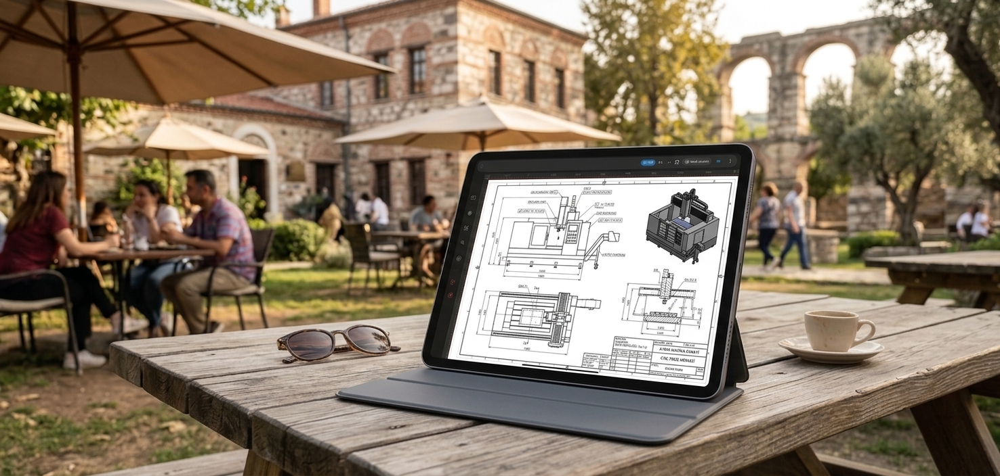

Mobil CAD Nedir? Teknik Çizimi Bilgisayardan Tablete Taşımak

Teknik çizim çalışmalarını yalnızca bilgisayar başında yapmak zorunda kalmadan, tablet ve telefon gibi mobil cihazlarda CAD çizimlerine erişmek, görüntülemek ve düzenlemek artık mümkün. Peki mobil CAD nedir, kimler için kullanışlıdır ve masaüstü CAD'den farkı nedir?
CAD denildiğinde çoğu kişinin aklına büyük bir monitörün karşısında çalışan bir bilgisayar ve profesyonel bir çalışma ortamı gelir. Gerçekten de masaüstü bilgisayarlar, özellikle kapsamlı ve uzun süreli CAD çalışmalarında önemli bir çalışma alanı sunar.
Ancak teknik çizim ihtiyacı her zaman ofiste veya bilgisayar başında ortaya çıkmaz. Bir mimar şantiyede çizimini kontrol etmek isteyebilir, bir mühendis üretim alanında teknik bir detaya bakabilir, bir öğrenci ders arasında projesini inceleyebilir veya bir teknik ressam müşterisinin yanında bir çizim üzerinde hızlı bir değişiklik yapmak isteyebilir.
İşte mobil CAD bu noktada devreye girer. Mobil CAD, CAD ve teknik çizim çalışmalarının tablet ve telefon gibi mobil cihazlara taşınmasını sağlayan çalışma yaklaşımıdır.
Bu yazıda mobil CAD'i yalnızca bir uygulama türü olarak değil, teknik çizim iş akışının mobil hale gelmesi açısından ele alacağız. Mobil CAD'in ne olduğunu, hangi durumlarda avantaj sağladığını, masaüstü CAD'den nasıl ayrıldığını ve kimler için kullanışlı olabileceğini birlikte inceleyelim.
Mobil CAD Nedir?
CAD, İngilizce Computer-Aided Design ifadesinin kısaltmasıdır ve bilgisayar destekli tasarım anlamına gelir. Mimari çizimler, mühendislik projeleri, üretim çizimleri ve farklı teknik tasarım çalışmaları CAD yazılımları kullanılarak hazırlanabilir.
Mobil CAD ise bu çalışma deneyiminin mobil cihazlara taşınmasıdır. Başka bir ifadeyle mobil CAD; teknik çizim oluşturma, mevcut çizimleri görüntüleme, çizimler üzerinde düzenleme yapma ve dosyalarla çalışma gibi işlemlerin tablet veya telefon üzerinden gerçekleştirilebilmesini ifade eder.
Buradaki amaç yalnızca masaüstü bilgisayardaki çalışma ortamını daha küçük bir ekrana taşımak değildir. Mobil CAD'in en önemli avantajı, teknik çizime ihtiyaç duyduğunuz anda bilgisayar başında olmanızı gerektirmemesidir.
Mobil CAD, teknik çizim ve CAD çalışmalarına mobil cihazlardan erişebilmenizi ve uygun işlemleri bilgisayara bağlı kalmadan gerçekleştirebilmenizi sağlayan çalışma yaklaşımıdır.
Neden Mobil CAD Kullanılır?
Teknik çizimler çoğu zaman yalnızca çizim yapılırken değil, projenin farklı aşamalarında da kullanılır. Çizimi kontrol etmek, bir detayı göstermek, mevcut bir dosyayı incelemek veya küçük bir düzenleme yapmak gerektiğinde bilgisayarın başına dönmek her zaman pratik olmayabilir.
Mobil CAD'in temel avantajı tam olarak burada ortaya çıkar: çizimin ihtiyaç duyulan yere taşınması.
Ofis dışında teknik çizime erişim
Şantiye, atölye, üretim alanı, müşteri toplantısı veya eğitim ortamı gibi farklı yerlerde teknik çizimlere ihtiyaç duyulabilir. Mobil cihaz, çizimin bu ortamlarda daha kolay erişilebilir olmasını sağlar.
Hızlı kontrol ve inceleme
Bazen amaç yeni bir proje oluşturmak değil, mevcut çizimdeki bir detayı kontrol etmektir. Böyle durumlarda bilgisayarı açmak yerine çizime tablet veya telefondan ulaşmak daha pratik olabilir.
Çizimi sahaya taşımak
Özellikle teknik çizimlerin sahada kullanıldığı işlerde mobil cihazlar önemli bir kolaylık sağlayabilir. Çizimin yanında bulunması, gerekli bilgilerin daha hızlı kontrol edilmesine yardımcı olur.
Mobil CAD ile Neler Yapılabilir?
Mobil CAD uygulamalarının sunduğu özellikler kullanılan yazılıma göre değişebilir. Bu nedenle her mobil CAD uygulamasının masaüstü CAD yazılımlarındaki tüm özelliklere sahip olduğunu düşünmemek gerekir.
Bununla birlikte, mobil ortamda gerçekleştirilebilen CAD işlemleri yalnızca dosya görüntülemekle sınırlı değildir. Kullanılan uygulamanın özelliklerine bağlı olarak teknik çizimler oluşturulabilir, düzenlenebilir ve farklı formatlarda dışa aktarılabilir.
2D teknik çizim oluşturma
Çizgi, çoklu çizgi, daire, yay ve benzeri temel çizim araçlarıyla 2D teknik çizimler mobil cihaz üzerinde hazırlanabilir. Bu özellik özellikle hızlı çizim ve saha çalışmaları açısından kullanışlı olabilir.
Mevcut çizimleri düzenleme
Mobil CAD yalnızca sıfırdan çizim yapmak için kullanılmaz. Mevcut bir çizim üzerinde düzenleme yapmak da önemli kullanım alanlarından biridir. Trim, Extend, Offset ve Rotate gibi düzenleme işlemleri, destekleyen CAD uygulamalarında mobil ortamda gerçekleştirilebilir.
Katmanlarla çalışma
Teknik çizimlerde katman kullanımı, farklı çizim elemanlarının düzenli şekilde yönetilmesini sağlar. Mobil CAD uygulamalarında katman desteğinin bulunması, daha düzenli ve kontrollü çizim çalışmalarına olanak sağlayabilir.
Snap ile daha kontrollü çizim
Teknik çizimde hassasiyet önemlidir. Endpoint, Midpoint, Intersection ve Center gibi snap seçenekleri, çizim elemanlarının belirli geometrik noktalara daha kontrollü şekilde yerleştirilmesine yardımcı olur.
Farklı formatlarda çıktı alma
Kullanılan uygulamanın desteklediği formatlara bağlı olarak çizimler PNG, SVG veya PDF gibi formatlarda dışa aktarılabilir. Böylece hazırlanan teknik çizimin farklı ortamlarda paylaşılması veya sunulması kolaylaşabilir.
Mobil CAD ile Masaüstü CAD Arasındaki Fark Nedir?
Mobil CAD ile masaüstü CAD'i karşılaştırırken en önemli nokta, birinin mutlaka diğerinin yerine geçmesi gerektiğini düşünmemektir. İki çalışma ortamının farklı avantajları vardır.
Masaüstü CAD
- Geniş ekran çalışma alanı
- Güçlü bilgisayar donanımı
- Kapsamlı ve uzun süreli proje çalışmaları
- Karmaşık CAD iş akışları
- Ofis ve sabit çalışma ortamları
Mobil CAD
- Taşınabilir çalışma ortamı
- Tablet ve telefon üzerinden erişim
- Sahada çizimlere hızlı erişim
- Çizimleri inceleme ve düzenleme
- Bilgisayardan bağımsız çalışma imkânı
Bu nedenle mobil CAD'i masaüstü CAD'in doğrudan rakibi olarak değerlendirmek yerine, CAD çalışma alanını genişleten bir araç olarak düşünmek daha doğru olabilir.
Özellikle çizimlerin ofis dışında da kullanılması gereken durumlarda mobil CAD, masaüstü çalışma ortamını tamamlayan pratik bir çözüm haline gelebilir.
Telefon mu, Tablet mi? Mobil CAD İçin Hangi Cihaz Daha Kullanışlı?
Mobil CAD kullanırken telefon ve tablet arasında seçim yapmak, yapılacak çalışmanın türüne bağlıdır. Her iki cihaz da teknik çizimlere erişim sağlayabilir; ancak ekran boyutu kullanım deneyimini doğrudan etkiler.
Telefon ile CAD kullanımı
Telefonlar taşınabilirlik açısından oldukça avantajlıdır. Bir çizimi hızlıca açmak, incelemek veya ihtiyaç duyulan bir detayı kontrol etmek için kullanılabilir.
Ancak ekranın daha küçük olması nedeniyle uzun süreli ve ayrıntılı çizim çalışmaları tablet kadar rahat olmayabilir.
Tablet ile CAD kullanımı
Tabletler daha büyük ekran alanı sayesinde teknik çizimlerde daha rahat bir çalışma ortamı sunabilir. Dokunmatik ekranın yanında klavye veya benzeri aksesuarların kullanılabilmesi, tabletleri daha kapsamlı mobil CAD çalışmaları için de uygun hale getirebilir.
Tablet üzerinde klavye kullanarak CAD çizimlerini daha hızlı ve kontrollü şekilde hazırlama konusunu ayrıca ele aldığımız Tablette CAD Kullanımı: Klavye ile Daha Hızlı ve Verimli Teknik Çizim başlıklı makalemize de göz atabilirsiniz.
Mobil CAD'i Kimler Kullanabilir?
Mobil CAD belirli bir meslek grubuyla sınırlı değildir. Teknik çizimlerle çalışan veya çizim dosyalarına farklı ortamlarda erişme ihtiyacı bulunan birçok kullanıcı için faydalı olabilir.
Mimarlar
Mimari projelerin sahada incelenmesi, çizim detaylarının kontrol edilmesi ve gerektiğinde çizimler üzerinde çalışma yapılması için mobil CAD kullanılabilir.
İç mimarlar
İç mimarlık çalışmalarında ölçü, plan ve teknik çizimler proje sürecinin önemli parçalarıdır. Tablet üzerinde çizimlere erişmek, özellikle yerinde yapılan çalışmalarda pratiklik sağlayabilir.
Mühendisler
Mühendislik projelerinde teknik çizimlerin kontrol edilmesi ve sahadaki uygulamalarla karşılaştırılması gerekebilir. Mobil cihaz, bu çizimlere ihtiyaç duyulan ortamda erişmeyi kolaylaştırabilir.
Teknik ressamlar
Teknik çizim hazırlayan kullanıcılar, çizimlerini yalnızca ofiste değil farklı ortamlarda da incelemek veya düzenlemek isteyebilir. Mobil CAD bu noktada tamamlayıcı bir çalışma ortamı sunabilir.
CNC ve üretim alanında çalışanlar
Üretim süreçlerinde teknik çizim ve DXF dosyalarına erişim gerekebilir. Mobil cihaz üzerinden çizim dosyalarını kontrol edebilmek, bilgisayara erişimin sınırlı olduğu durumlarda kolaylık sağlayabilir.
Öğrenciler
CAD öğrenen öğrenciler için tablet, teknik çizimleri incelemek ve çizim çalışmaları yapmak açısından taşınabilir bir çalışma ortamı sağlayabilir.
Şantiye ekipleri
Şantiyede teknik çizimlere ihtiyaç duyulduğunda bilgisayar taşımak her zaman pratik olmayabilir. Mobil CAD, çizimlerin sahaya daha kolay taşınmasına yardımcı olabilir.
Mobil CAD ve DXF Dosyaları Neden Önemli?
Mobil CAD kullanımında dosya uyumluluğu önemli konulardan biridir. Özellikle farklı CAD yazılımları arasında kullanılan teknik çizim dosyalarına mobil cihazlardan erişmek isteyen kullanıcılar için desteklenen dosya formatları önem taşır.
DXF, CAD dünyasında yaygın olarak kullanılan dosya formatlarından biridir. Bu nedenle mobil CAD uygulamalarında DXF dosyalarını açabilmek ve uygulamanın desteklediği ölçüde düzenleyebilmek, mevcut teknik çizimlerle mobil ortamda çalışmak isteyen kullanıcılar için önemli bir avantajdır.
DXF formatının ne olduğunu daha ayrıntılı şekilde öğrenmek için DXF Dosyası Nedir? başlıklı makalemizi okuyabilirsiniz.
Eğer amacınız doğrudan bir DXF dosyasını telefon veya tablette açmaksa, bununla ilgili adım adım hazırladığımız DXF Dosyası Telefonda ve Tablette Nasıl Açılır? rehberine de göz atabilirsiniz.
Mobil CAD Hangi Durumlarda Avantaj Sağlar?
Mobil CAD'in asıl değerini anlamanın en kolay yolu kullanım senaryolarına bakmaktır.
Bir müşteriye proje göstermek gerektiğinde
Müşteri görüşmelerinde bilgisayar taşımak yerine tablet üzerinden ilgili teknik çizime erişmek daha pratik olabilir. Çizimin daha büyük bir ekranda gösterilebilmesi, özellikle tablet kullanımında görüşmeyi kolaylaştırabilir.
Şantiyede çizim kontrolü yapılırken
Teknik çizimin sahada kontrol edilmesi gerektiğinde mobil cihaz önemli bir kolaylık sağlayabilir. Çizime erişmek için ayrı bir bilgisayar çalışma alanı oluşturmak yerine mobil cihaz kullanılabilir.
Atölyede veya üretim alanında
Üretim alanında teknik çizimlerin yanında bulunması gerekebilir. Mobil CAD, çizim dosyalarının ihtiyaç duyulan çalışma alanına taşınmasını kolaylaştırabilir.
Hızlı bir değişiklik gerektiğinde
Her değişiklik için ofisteki bilgisayara dönmek yerine, kullanılan mobil CAD uygulamasının desteklediği düzenleme araçlarından yararlanarak gerekli değişiklikler mobil ortamda yapılabilir.
Mobil CAD, Masaüstü CAD'in Yerini Tamamen Alır mı?
Bu sorunun tek bir cevabı yoktur. Çünkü CAD kullanım amacı ve proje gereksinimleri kullanıcıdan kullanıcıya değişir.
Çok büyük ve karmaşık projeler, geniş ekran gereksinimi veya yoğun bilgisayar kaynakları isteyen profesyonel iş akışları için masaüstü CAD ortamı hâlâ önemli bir çalışma alanıdır.
Buna karşılık çizimlere sahada erişmek, bir projeyi hızlıca kontrol etmek, mevcut bir teknik çizimde düzenleme yapmak veya çizim çalışmalarını farklı ortamlara taşımak isteyen kullanıcılar için mobil CAD önemli bir tamamlayıcı olabilir.
Mobil CAD'in amacı her durumda masaüstü bilgisayarın yerini almak değil; teknik çizime ihtiyaç duyduğunuz anda çalışma alanınızı bilgisayarın dışına taşımaktır.
TamgamCAD ile Mobil CAD Deneyimi
TamgamCAD, 2D teknik çizim çalışmalarını mobil cihazlara taşımak amacıyla geliştirilmiş bir CAD uygulamasıdır. Mobil ortamda çizim oluşturmak, mevcut çizimler üzerinde çalışmak ve teknik çizim dosyalarına farklı ortamlarda erişmek isteyen kullanıcılar için tasarlanmıştır.
TamgamCAD içerisinde Line, Polyline, Circle, Arc, Donut ve TTR gibi çizim araçlarının yanı sıra Trim, Extend, Offset ve Rotate gibi düzenleme araçları bulunur. Katman yönetimi ve Endpoint, Midpoint, Intersection ve Center gibi snap seçenekleri de teknik çizim çalışmalarının daha kontrollü yürütülmesine yardımcı olur.
Uygulamanın DXF içe aktarma ve dışa aktarma desteği, mevcut CAD çizimleriyle mobil ortamda çalışmak isteyen kullanıcılar için önemli bir kullanım alanı oluşturur. Çizimlerin PNG, SVG ve PDF gibi formatlarda dışa aktarılabilmesi de farklı paylaşım ve sunum ihtiyaçlarına yardımcı olur.
TamgamCAD'in amacı, teknik çizim çalışmalarını yalnızca masaüstü bilgisayara bağlı bırakmadan, ihtiyaç duyulan farklı ortamlarda sürdürebilmektir.
Sonuç: Teknik Çizim Artık Sadece Bilgisayar Başında Değil
Mobil CAD, teknik çizim dünyasında masaüstü çalışma ortamının tamamen ortadan kalkması anlamına gelmez. Bunun yerine CAD çalışmalarının ihtiyaç duyulan yere taşınmasını sağlar.
Tablet veya telefon üzerinden teknik çizimlere erişebilmek; mimarlar, mühendisler, teknik ressamlar, öğrenciler, üretim çalışanları ve saha ekipleri için farklı avantajlar sunabilir.
Özellikle 2D CAD çizimleri, DXF dosyaları ve teknik dokümanlarla çalışan kullanıcılar için mobil cihaz, yalnızca iletişim veya içerik tüketme aracı olmaktan çıkıp teknik çalışmanın bir parçası haline gelebilir.
Önemli olan hangi cihazın daha iyi olduğu değil, yaptığınız işe hangi çalışma ortamının daha uygun olduğudur. Ofiste masaüstü bilgisayarın sunduğu çalışma alanından yararlanırken, sahada veya hareket halindeyken mobil CAD'in sunduğu erişilebilirlikten faydalanmak birçok iş akışını daha esnek hale getirebilir.